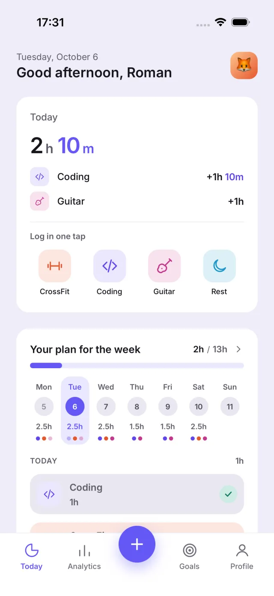
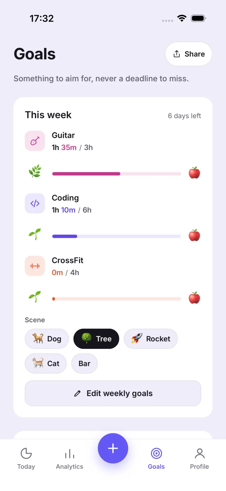

Hourseed
A portfolio for your time, built for people with many hobbies.



- Every hobby is an asset and hours are the currency. Capital never goes down, momentum fades slowly at a rate set by how often you do the thing, and there are no streaks and no red numbers.
- A weekly planner spreads your goals over the days you have free, with animated goal scenes and a share card for a finished week.
- Staging and production builds ship side by side to invited testers. Small fixes go out over the air without a new build or App Review.
- Local-first with no backend. The domain logic is pure and unit-tested, screens are covered by end-to-end flows, and every string exists in English, Ukrainian and Polish.